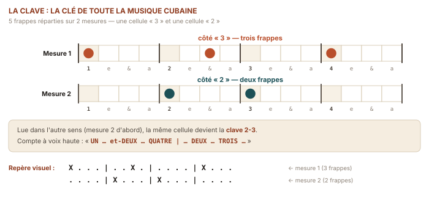
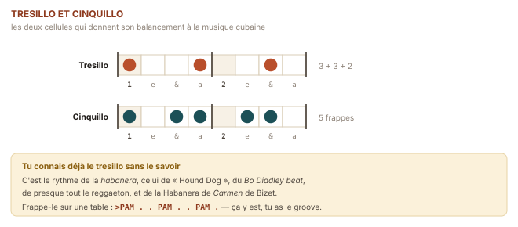

Les couleurs cubaines
Clave, boléro, guajira, son : d'où vient ce balancement.
Tout ce qui précède était de la guitare. Ce qui suit est de la musique cubaine. La différence tient en peu de chose — une manière de placer les accents, une basse qui arrive trop tôt, une cellule de cinq frappes réparties sur deux mesures — mais cette peu de chose est un continent.
Une île, trois héritages
La musique cubaine naît d'une rencontre, et il faut la nommer clairement pour comprendre ce qu'on joue. De l'Espagne viennent l'instrument, les formes strophiques, la guitare et la décima — un poème de dix vers qu'on improvise. D'Afrique de l'Ouest et centrale, apportée par la traite, viennent la conception du rythme comme architecture superposée, le jeu de tambours, l'appel et la réponse. Et de la rencontre des deux, dans les campagnes d'Oriente et les faubourgs de La Havane du XIXe siècle, naît quelque chose qui n'existait nulle part.
✦ Le sais-tu ?
On dit souvent que la musique cubaine est « un mélange ». Le musicologue cubain Fernando Ortiz a proposé en 1940 un mot bien plus juste : la transculturación. Un mélange conserve ses ingrédients ; une transculturation produit un troisième terme, qui n'est ni l'un ni l'autre. Ortiz utilisait l'image du ajiaco, le ragoût créole cubain où chaque légume garde sa forme en surface mais où le bouillon, lui, est absolument nouveau. Le son n'est pas de la musique espagnole rythmée à l'africaine : c'est une musique cubaine.
La clave : la clef, au sens propre
✳ Le mot
Clave (espagnol, « clef » — au sens de la clef de voûte ; le mot désigne aussi les deux bâtonnets de bois qui la frappent) — une cellule de cinq frappes étalée sur deux mesures, qui sert de référence temporelle à tous les musiciens d'un orchestre. Elle n'est pas un accompagnement : elle est la règle. Chaque phrase, chaque syncope, chaque entrée de cuivre est « en clave » ou « croisée » (cruzada) — et jouer croisé est, pour un musicien cubain, aussi audible qu'une fausse note.

Compte à voix haute « un et deux et trois et quatre et / un et deux et trois et quatre et » et frappe dans les mains sur les syllabes en gras. Voilà. Tu viens de jouer la clave son 3-2. C'est tout : cinq frappes, et cinq siècles d'histoire atlantique.
♪ Écoute · la clave seule
La clave son 3-2 · démonstration en boucle
Écoute-la en boucle pendant une minute, puis remets Chan Chan ou El cuarto de Tula : tu vas l'entendre dessous, et tu ne pourras plus jamais ne pas l'entendre. C'est un des grands basculements d'oreille de l'apprentissage ; profite du moment.
◆ Sentir la clave sans y penser
Ne cherche pas à jouer la clave à la guitare — ce n'est pas son rôle. Cherche à la frapper du pied ou de la main pendant que tu écoutes, et à sentir où tombe le « ponche », cette troisième frappe qui arrive une croche trop tôt et donne au son cubain son irrésistible penchant en avant. Quand tu la sens, ta guitare se mettra spontanément à la respecter.
Le tresillo, et le penchant vers l'avant

Tout ce qui te paraîtra « cubain » dans ton jeu viendra d'une seule idée : l'anticipation. Le changement d'accord n'arrive pas sur le temps fort ; il arrive une croche avant, et se prolonge par-dessus. Ce décalage minuscule est ce qui distingue une valse d'une guajira.
Occidental, « carré » | Am . . . | Dm . . . |
1 2 3 4 1 2 3 4
Cubain, anticipé | Am . . Dm | Dm . . E7 |
1 2 3 & 1 2 3 &
↑ l'accord suivant arrive
sur le « et » du 3 ou du 4
Essaie les deux sur la même grille. Le second te paraîtra « faux » pendant trois jours, puis irremplaçable.
✦ Le sais-tu ?
Cette anticipation de la basse porte un nom : le tumbao d'anticipated bass. Elle a une origine historique précise : dans les premiers sextetos de son, à Santiago vers 1910, la basse était jouée sur une marímbula — une grande sanza-caisse africaine dont on pince les lames assis dessus. L'instrument, lent à répondre, obligeait le musicien à attaquer légèrement en avance pour que la note tombe sur le temps. Quand la contrebasse a remplacé la marímbula dans les années 1920, les musiciens ont gardé l'anticipation, qui était devenue le son de la musique. Un défaut d'instrument devenu signature d'un genre : c'est une des plus belles histoires de la musique du XXe siècle.
Les trois genres que tu vas jouer
Rien à voir avec le Boléro de Ravel, qui est espagnol et en 3/4. Le boléro cubain naît à Santiago en 1883 avec Tristezas de José « Pepe » Sánchez : c'est une chanson d'amour lente, en 4/4, portée par le cinquillo. C'est le genre le plus accessible pour toi, parce qu'il est lent et qu'il s'accommode parfaitement d'un arpège simple.
Grille type : Am – Dm – E7 – Am ou Dm – G7 – C – A7
Main droite : patron n°4 (p – i m a), une respiration sur le deuxième temps. Ne remplis pas : le boléro vit de son silence.
♪ Écoute · le boléro
Dos gardenias · Ibrahim Ferrer · 1997 · Buena Vista Social Club
Écrit par la Mexicaine Isolina Carrillo en 1945, devenu un standard cubain absolu. Écoute la guitare : elle ne joue presque rien. Quelques notes, beaucoup d'air. C'est exactement ce que tu sauras faire dans six semaines.
La musique du guajiro, le paysan de l'intérieur de l'île. Elle chante la campagne, la décima improvisée, et elle balance entre 6/8 et 3/4 — deux façons de découper six croches (3+3 ou 2+2+2) qui alternent à l'intérieur d'une même phrase. Cette ambiguïté porte un nom espagnol : la sesquiáltera. C'est elle qui donne à la guajira son côté berceuse qui ne s'endort jamais tout à fait.
Grille type : C – G – C – G ou D – G – A – D — souvent seulement deux ou trois accords qui tournent, indéfiniment, sous un texte improvisé.
Main droite : patron n°3 (p i m a m i), six notes par mesure. C'est exactement la pièce que tu joueras en section 10.
♪ Écoute · la guajira
El carretero · Guillermo Portabales · années 1950
Portabales a inventé la guajira de salón : la musique paysanne jouée avec un raffinement de salon. Écoute le balancement de la guitare — c'est littéralement le patron n°3 que tu travailles en semaine 4.
La matrice de tout : la salsa, le mambo, le cha-cha-cha et une bonne part du jazz latin en descendent. Né dans l'Oriente rural à la fin du XIXe siècle, monté à La Havane vers 1910, il s'organise en deux parties : le largo (couplets chantés, structure fixe) puis le montuno (boucle courte, appel-réponse entre le soliste et le chœur, improvisations). C'est le plus rapide, et donc le dernier que tu attaqueras.
Grille type : le montuno tourne souvent sur I – IV – V – IV, par exemple C – F – G – F, ou simplement deux accords en boucle.
Main droite : grattage sec, main légère, accents sur les contretemps. Le rythme compte cent fois plus que la richesse harmonique.
♪ Écoute · le son montuno
El cuarto de Tula · Buena Vista Social Club · 1997
Sept minutes, deux accords. Écoute comment la tension monte uniquement par le rythme et par l'entrée successive des solistes — aucun changement harmonique. C'est la démonstration la plus claire qui soit que la musique n'a pas besoin de beaucoup d'accords : elle a besoin de beaucoup de temps bien placé.
Le rôle de la guitare dans un groupe cubain
Un point qui surprend tous les guitaristes venus du rock ou de la chanson : dans un orchestre cubain, la guitare n'est pas au centre. Elle fait partie d'un tissu où chacun joue peu, mais exactement au bon endroit.
| Instrument | Son rôle |
|---|---|
| Claves | La règle temporelle. Cinq frappes, rien d'autre, jamais. |
| Tres | Guitare cubaine à trois chœurs doubles ; joue le guajeo, une boucle mélodique syncopée. |
| Guitare | Harmonie et arpège. Elle remplit l'espace entre la basse et le tres. |
| Contrebasse | Le tumbao anticipé : elle joue avant le temps. |
| Bongó / congas | Le martillo, un tic-tac continu, et les ponctuations. |
| Maracas, güiro | La nappe de croches qui fait tenir l'ensemble. |
✳ Le mot
Tres (espagnol, « trois ») — la guitare nationale cubaine : plus petite, avec trois chœurs de deux cordes accordées à l'octave ou à l'unisson, soit six cordes en trois groupes. Son timbre métallique et perçant, très reconnaissable, est celui qu'on entend dans tous les sons cubains. Tu n'en as pas besoin : ta guitare classique tient parfaitement le rôle harmonique, et c'est sur elle qu'ont été enregistrés la plupart des boléros que tu aimes.
✦ Le sais-tu ?
Le Buena Vista Social Club, dont viennent la moitié des morceaux de ce guide, était à l'origine un vrai club de quartier à Buenavista, La Havane, fermé après 1959. L'album de 1997 est né d'un accident : Ry Cooder était venu enregistrer une rencontre entre musiciens cubains et maliens, mais les Maliens n'ont jamais obtenu leurs visas. En six jours, faute de mieux, on a enregistré les vieux musiciens cubains qui traînaient dans le studio — Compay Segundo avait 89 ans, Rubén González n'avait plus de piano chez lui depuis des années. Le disque s'est vendu à plus de huit millions d'exemplaires et a fait redécouvrir le son cubain au monde entier. Il n'était pas censé exister.
★ Petite victoire
Mets Chan Chan et frappe la clave dans les mains, du début à la fin, sans décrocher. Quatre minutes. Si tu y arrives, tu as intégré le socle rythmique de toute la musique afro-cubaine — et tu entendras désormais la clave dans à peu près la moitié de la musique populaire mondiale.
⚑ Défi · la chasse au tresillo
Cherche le tresillo (3+3+2) ailleurs qu'à Cuba. Tu le trouveras dans le tango argentin, le reggaeton, Hound Dog d'Elvis, la musique de Nouvelle-Orléans, la trap, le highlife ghanéen, et la main gauche de la Habanera de Bizet. Trois trouvailles cette semaine : tu ne réécouteras plus jamais la radio de la même façon.
« Sans clave, il n'y a pas de musique cubaine. Il y a du bruit bien intentionné. »